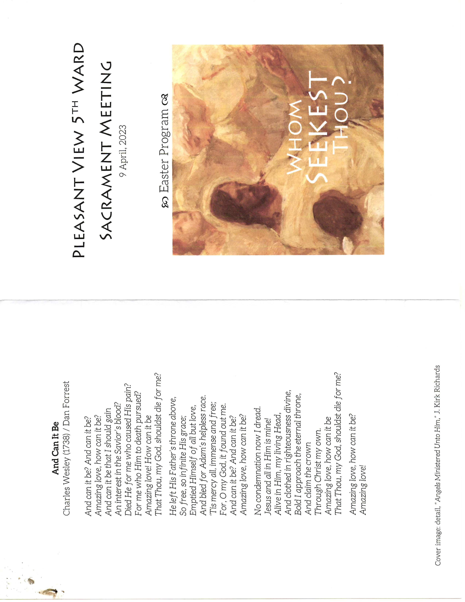
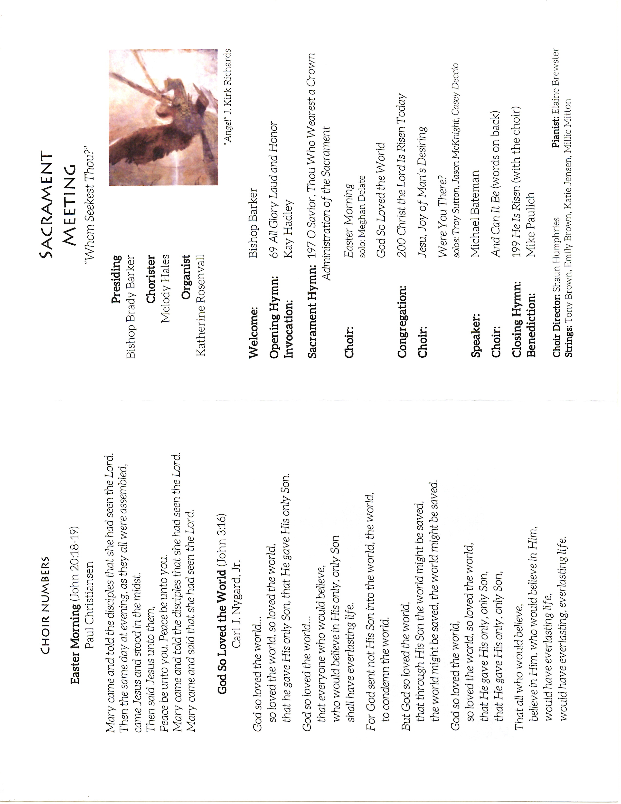
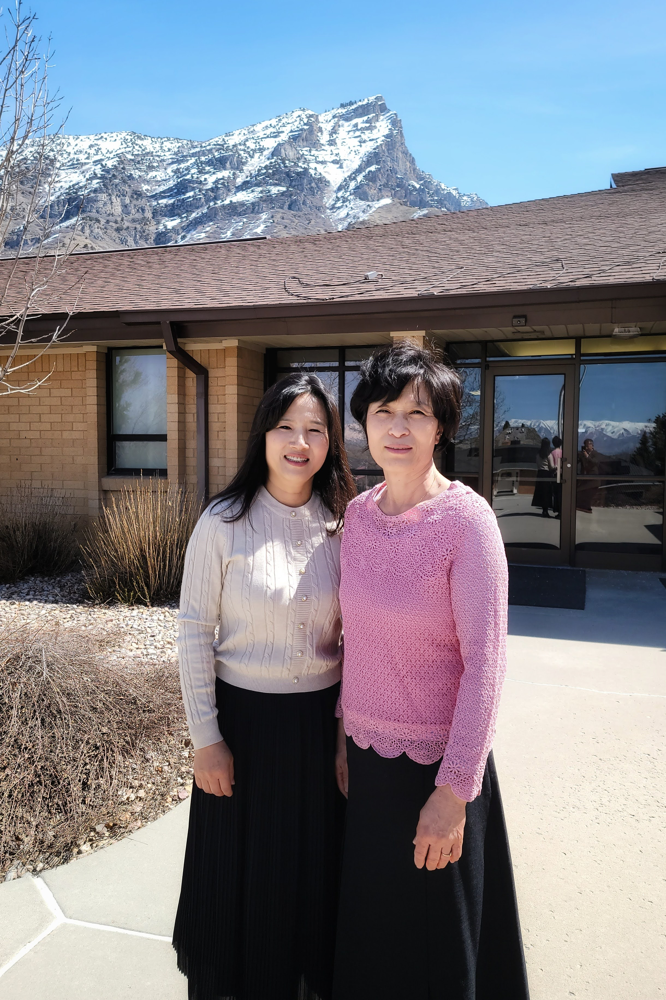
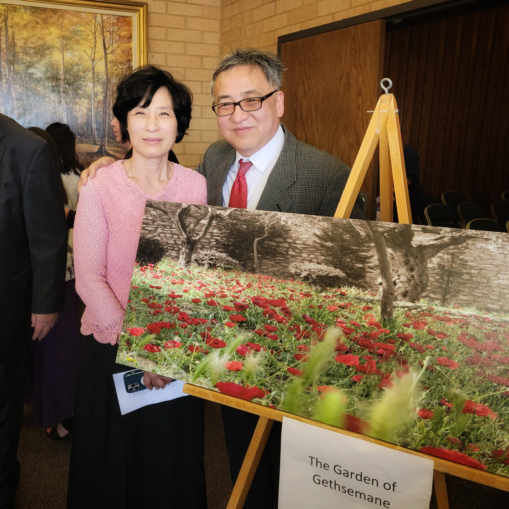

The quality of Easter programs and the number of talents in the area is ever increasing.
I believe the knowledge, awareness, and appreciation is also increasing.
The preparation and the presentation by the Pleasant View 5th Ward was remarkable.
Heard comments like,
“A mini General Conference”
When Shaun Humphries, the conductor, led the singing of “He is Risen” she may as well have been conducting major symphony and chorus.
Singing was exquisite and uplifting.
It helps that we have a half dozen current and past members of the Tabernacle Choir.
We even had 4 members that played violins, viola and cello.
The Easter message delivered by Mike Bateman was like listening to a General Authority.
[He is the oldest child of former Presiding Bishop and the President of BYU, Merril Bateman]




Only disappointment was when the Bishop announced a treat after the meeting.
I was expecting something sweet, perhaps like the ones that drew us to church on Easter and Christmas, when we were younger.
It turns out the treat was spiritual.
Jim Kearl who has visited Jerusalem more than 100 times shared his collection of Maps of Jerusalem
These maps tell a story, instead of navigation.
It was an Easter to remember.


Mike Bateman’s Message
John 20
11 But Mary stood without at the sepulchre weeping: and as she wept, she stooped down, and looked into the sepulchre,
12 And seeth two angels in white sitting, the one at the head, and the other at the feet, where the body of Jesus had lain.
13 And they say unto her, Woman, why weepest thou? She saith unto them, Because they have taken away my Lord, and I know not where they have laid him.
14 And when she had thus said, she turned herself back, and saw Jesus standing, and knew not that it was Jesus.
15 Jesus saith unto her, Woman, why weepest thou? whom seekest thou? She, supposing him to be the gardener, saith unto him, Sir, if thou have borne him hence, tell me where thou hast laid him, and I will take him away.
16 Jesus saith unto her, Mary. She turned herself, and saith unto him, Rabboni; which is to say, Master.
I add my testimony to Mary’s and to both his ancient and modern day disciples
He is risen.
Those three words are the words of eternal hope
In the Savior’s brief encounter with Mary He asks her an important question
Whom seekest thou?
Brothers and sisters this is the Easter question.
Of course Mary was seeking Jesus
Is the first and foremost person that we are seeking in our lives is Jesus?
Do we, like Mary, sometimes struggle to recognize Him in the challenges of our lives
In order that we might recognize Him as we seek, we must come to know Him.
I pray that the Holy Ghost will help us.
This Easter season come to know Jesus in a more deep and personal way
If the Easter question is,Whom seekest thou, then the Easter answer is Jesus.
Over the past several years Cheryl and I, and in a more concentrated way, over the last six months, have been striving to come to know the Savior by studying and learning about his many names, titles and descriptions.
In John 14:6, we read
6 Jesus saith unto him, I am the way, the truth, and the life: no man cometh unto the Father, but by me.
Jesus is the Way
In his talk titled, The Way, Elder Lawrence Corbridge said^[https://www.churchofjesuschrist.org/study/general-conference/2008/10/the-way?lang=eng],
Jesus Christ is the way, there is only one way to happiness and fulfillment he is the way every other way any other way whatever way is foolishness.
Either we learn of him and have life more abundantly or we don’t and foolishly remain dead still.
He is the savior
Either we accept the blessings of His atonement than are made clean and pure worthy to have this spirit or we don’t and foolishly remain alone in filthy still.
He is the way
To my young 15 and 16 year old friends in our Sunday school class.
You will remember that we spoke of the doctrine of Christ a few weeks ago
Faith in the Lord Jesus Christ, His atonement, repentance, the keeping and making and keeping of sacred covenants, receiving the gift of the Holy Ghost and then remaining in staying with him who is the end
Please know that His doctrine is the only way that leads to Him who is the way
President Nelson has further taught that the pure doctrine of Christ is powerful and changes the life of everyone who understands it and seeks to implement it in his or her life
The doctrine of Christ helps us find and stay on the covenant path and staying on that straight and narrow path that leads us to the Way will ultimately qualify us to receive all that God has.
Brothers and sisters remember our Easter question, whom seekest thou
As we search for, learn about, applied to, and ultimately attain an understanding of the doctrine of Christ.
As found in the scriptures and specially in the Book of Mormon we will come to know that Jesus is the Lamb the only enduring and absolute way
Jesus is the Truth
Again I wish to speak to my young friends
Please know that the Lord Jesus Christ and our heavenly father love you.
You are literally a child of God
Please know that this is an absolute and eternal truth
You may hear some of the world say
I have my truth and he or she has theirs
Or it’s up to each individual to say what is true
Or what makes something true to me is how I feel about it and different people feel differently about things and so what’s true for one person isn’t necessarily true for another
These are the philosophies and doctrines of men and they hold no eternal value
If one puts their trust in these philosophies they will find themselves tossed with every wind of doctrine
The only way to have peace is to be anchored to He who is true
Truth is found for seeking Jesus
To find the answer to our Easter question
Whom seekest thou
I invite us to heed and follow God’s living prophet
As we do so we’ve learned that Jesus is the truth, the only enduring and absolute truth.
Jesus is the life
Many years ago Cheryl and I had the opportunity to visit the Holy Land
It was during spring time and the flowers were in bloom
One of the stops on our trip was the garden of Gethsemane
Beginning in the Gethsemane and finishing on the cross of Calvary
Jesus alone took upon Himself the pains, the afflictions, the temptations, and the sins of all mankind
In order that He may lose the bands of death which bind his people.
On the day we arrived we were astonished to find that the garden of Gethsemane was covered in red poppy flowers
Hundreds of these red flowers dotted the ground at the base of the olive tree
These red flowers were beautifully symbolic of the life giving blood.
The blood cometh from every pore.
From Him who gave His life that you and might live.
We took a picture in the garden of Gethsemane
It hangs on our wall to remind us who is the giver of life
I brought it with me today.

16 For behold, I, God, have suffered these things for all, that they might not suffer if they would repent;
17 But if they would not repent they must suffer even as I;
18 Which suffering caused myself, even God, the greatest of all, to tremble because of pain, and to bleed at every pore, and to suffer both body and spirit—and would that I might not drink the bitter cup, and shrink
I testify that He did not shrink
Brothers and sisters,
Whom seekest thou?
In the midst of pains, afflictions, temptations
Whom seekest thou?
When your heart is broken, because you lost someone you love,
Whom seekest thou?
When you feel that your mistakes, your sins somehow disqualify you from the love of God
Whom seekest thou?
When you have sincere questions that have not been answered
Whom seekest thou?
When you are sad, discouraged, or worried over loved ones who have wandered and have lost their way.
Whom seekest thou?
When you feel anxiety, depression, distress, or perhaps you are overwhelmed by the confusing messages of the world.
`Whom seekest thou?`
For the promise of everlasting life in the face of illness, disability, old age and mortality’s inevitable consequence of death.
As we are faithful to the life-giving covenant that bind us to Him, we find that our Easter answer to these questions is Jesus.
Jesus is the life.
I close with one last name.
Repairer of the breach
Jesus knows, and intimately aware of every breach in my life
He knows my weaknesses, He knows my sins, He knows my fears, He knows my inadequacies.
He stands ready to repair, to heal and to make me whole.
The key for me is to come unto Him, to seek Him.
I love him with all my heart
Brothers and sisters I testify that Jesus Christ is risen
He is the way, the truth, and the life
He is the repairer of every breach
He is who we seek, even Jesus Christ